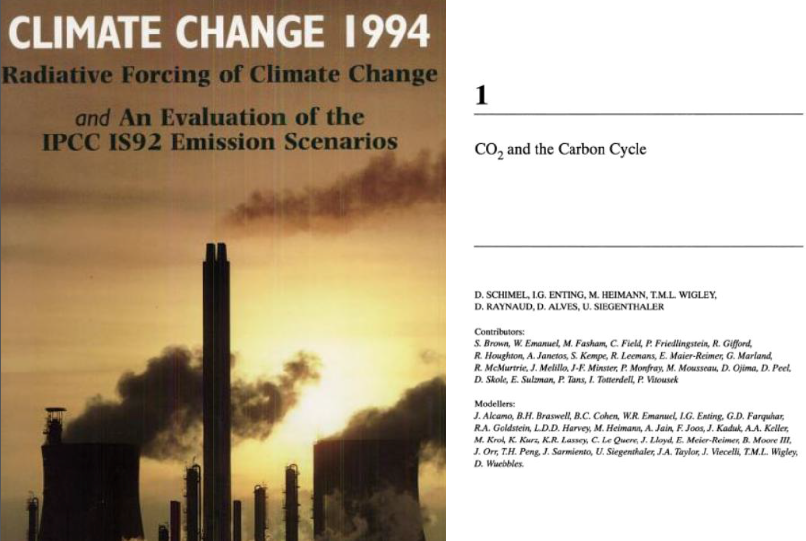

Enting fest, 2015
Mathematics in the Service of Physical Science:
A mini-symposium to
mark the career of Ian Enting
Over his career, Ian Enting has made considerable contributions in the fields of Climate, Atmospheric Composition and Statistical Physics. The aims of this symposium were to:
- Showcase these contributions in the one place;
- Highlight the role of applied mathematics in these contributions;
- Give some future perspective for the various fields.
Speakers at the symposium were Ian himself, Peter Rayner (the symposium organiser), Paul Krummel, David Etheridge, Roger Francey, Tony Guttmann, Cathy Trudinger, Nathan Clisby, Rachel Law, and Graeme Pearman. There were numerous other attendees, including Gary Newsam who made the trip from Adelaide.
The symposium schedule was:
| 9:30 | Paul Krummel | Welcome and logistics |
| 9:45 | Peter Rayner | Introduction and biographical sketch |
| 10:00 | David Etheridge / Roger Francey | Historical perspective |
| 10:15 | Tony Guttmann | The quest for solubility |
| 10:45 | (coffee break) | |
| 11:15 | Cathy Trudinger | Past atmospheric composition |
| 11:45 | Nathan Clisby | Lattice enumeration |
| 12:15 | Rachel Law | Atmospheric inversions |
| 12:45 | (lunch break) | |
| 13:45 | Peter Rayner | Experimental design |
| 14:15 | Graeme Pearman | Public engagement |
| 14:45 | Ian Enting | Are we there yet? Some problems I never managed to solve |
To find out more about Ian's illustrious and varied career, please visit his homepage, or have a look at Wikipedia, or search for his papers on Google Scholar.
| Ian′s book “Twisted” at 2700m in Aurora Basin camp, Antarctica, 2013. | Bushwalk near Melbourne during TransCom 2001. |
|  | |
| Cover from IPCC report Climate Change 1994, of which Ian was a lead author. | Photos of Ian from CRCSHM reports: left in 1995, after recently being appointed Program leader of “B2: Greenhouse Gases”, and right in 1996, after a year in the job! |
This webpage is still under development. If you have any comments or (especially) photos please contact Nathan Clisby (clisby@gmail.com).